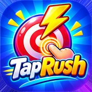

TapRush: Beat the Clock
A fast-paced reflex arcade game where players race against the clock, hit moving targets, avoid bombs and build impressive combos.
Pompiko Games
We create colorful, engaging mobile games designed to bring quick bursts of fun to everyday life.

A fast-paced reflex arcade game where players race against the clock, hit moving targets, avoid bombs and build impressive combos.
Pompiko is an independent mobile game studio focused on accessible, entertaining games you can pick up in a spare moment. We publish under the Pompiko brand and operate as Lumora Digital Ventures (Malaysia).
Our first title is TapRush: Beat the Clock — a portrait reflex game built around clear goals, fair challenge, and satisfying timing.